Polizia Municipale · Vernehmung
Zeugenaussage
Lucida Mansi
Kopfhörer empfohlen — auf dem Festivalgelände ist es laut.
Achten Sie auf die Uhrzeiten — und darauf, wer sie bestätigen kann.

Polizia Municipale · Vernehmung
Kopfhörer empfohlen — auf dem Festivalgelände ist es laut.
Achten Sie auf die Uhrzeiten — und darauf, wer sie bestätigen kann.